Python API
Everything the window does can be scripted with one object, Bench: a row of lenses on an
axis, some beams and an image plane.
The API will change. It is on the main branch (25 November 2026) and may not yet be in the
PyPI release. RayCrafter is pre-alpha.
Contents: Start · Find lenses · Place and move lenses · Fields · Focus and summary · Plots · Raw results · Sweeps · Drive the window · Files and reports · Errors · Reference
Start
You need Python 3.12 or later. To get the current main branch, with IPython, into a new environment:
pip install ipython "git+https://github.com/raycrafter-optical-design/raycrafter@main"
ipythonAll the examples below are one session, run top to bottom. A plot call returns a matplotlib Figure, shown
here under the command. In Jupyter, run %matplotlib inline first to see figures like this. In a terminal, save
them with .savefig("name.png").
Units and numbering
- Distances are in mm along the optical axis (z). Light travels towards larger z.
- Angles are in degrees, vergence in dioptres (positive converging), wavelengths in nm.
- Lenses are numbered from 0 along the axis, fields from 0 in the order added.
Make a bench
Bench() starts like a new window, with one lens. Bench(empty=True) has none. Both are
headless: no window is involved.
In [1]: from raycrafter import Bench
In [2]: Bench()
Out[2]: <Bench (headless): 1 lens, 1 field, image at 310.0 mm>
In [3]: bench = Bench(empty=True)
In [4]: bench
Out[4]: <Bench (headless): 0 lenses, 1 field, image at 310.0 mm>Find lenses
search_lenses filters the built-in catalogue. Results are sorted by absolute focal length.
In [5]: found = bench.search_lenses("AC254", min_focal_length_mm=49, max_focal_length_mm=101)
In [6]: for entry in found[:6]:
...: print(f"{entry.part_number:14} f = {entry.focal_length:6.1f} mm {entry.coating}")
AC254-050-C f = 50.0 mm C: 1050-1700 nm
AC254-050-AB f = 50.0 mm AB: 400-1100 nm
AC254-050-B f = 50.0 mm B: 650-1050 nm
AC254-050-A f = 50.2 mm A: 350-700 nm
AC254-060-C f = 60.0 mm C: 1050-1700 nm
AC254-060-B f = 60.1 mm B: 650-1050 nm
In [7]: negative = bench.search_lenses(max_focal_length_mm=-1, min_diameter_mm=24, category="Achromats")
In [8]: [entry.part_number for entry in negative[:5]]
Out[8]:
['ACN254-040-B',
'ACN254-040-A',
'ACN254-050-A',
'ACN254-050-B',
'ACN254-075-B']
In [9]: entry = bench.catalog["AC254-100-A"]
In [10]: entry.focal_length, entry.clear_diameter_mm, entry.category, entry.family
Out[10]: (100.1, 25.4, 'Achromats', 'Achromatic doublets')Place and move lenses
Build a 2:1 beam reducer. Each call returns a LensInfo snapshot.
In [11]: bench.add_lens("AC254-100-A")
Out[11]: LensInfo(index=0, part_number='AC254-100-A', front_z_mm=100.0, back_z_mm=106.5, thickness_mm=6.5, clear_diameter_mm=25.4, focal_length_mm=100.1, flipped=False, plossl_group=None, is_paraxial=False)
In [12]: bench.add_lens("AC254-050-A", front_z_mm=250)
Out[12]: LensInfo(index=1, part_number='AC254-050-A', front_z_mm=250.0, back_z_mm=261.5, thickness_mm=11.5, clear_diameter_mm=25.4, focal_length_mm=50.17, flipped=False, plossl_group=None, is_paraxial=False)
In [13]: bench.plot("ray_diagram")
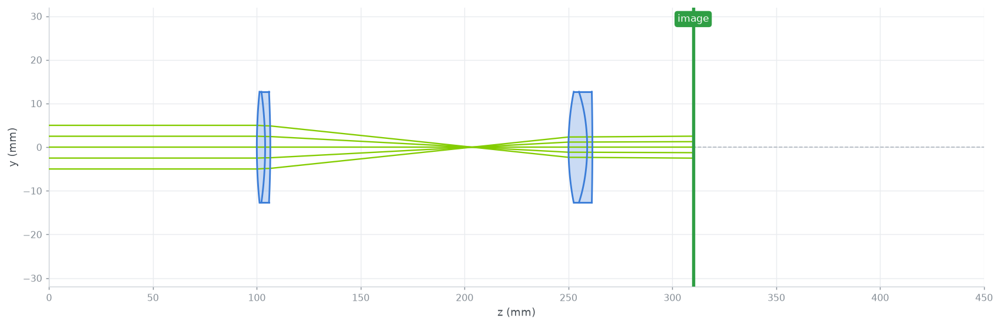
move_lens behaves like a drag: lenses cannot overlap. Snapshots do not update, so read
bench.lenses again after an edit.
In [14]: bench.move_lens(1, front_z_mm=245).front_z_mm
Out[14]: 245.0
In [15]: bench.move_lens(1, front_z_mm=90).front_z_mm # push it past the other lens: they swap
Out[15]: 100.0
In [16]: [(lens.index, lens.part_number, lens.front_z_mm) for lens in bench.lenses]
Out[16]: [(0, 'AC254-050-A', 100.0), (1, 'AC254-100-A', 250.0)]Flip and delete work by index. An ideal (paraxial) lens takes any focal length.
In [17]: bench = Bench(empty=True)
In [18]: bench.add_lens("LA1509-A")
Out[18]: LensInfo(index=0, part_number='LA1509-A', front_z_mm=100.0, back_z_mm=103.59, thickness_mm=3.59, clear_diameter_mm=25.4, focal_length_mm=100.0, flipped=False, plossl_group=None, is_paraxial=False)
In [19]: bench.flip_lens(0).flipped
Out[19]: True
In [20]: bench.add_paraxial_lens(150, front_z_mm=250).part_number
Out[20]: 'Paraxial f=+150 mm'
In [21]: bench.delete_lens(1)
In [22]: len(bench.lenses)
Out[22]: 1Plössl pairs
Two identical positive lenses that are close together can be snapped into a pair, which then moves as one.
In [23]: pair = Bench(empty=True)
In [24]: pair.add_lens("AC254-100-A");
...: pair.add_lens("AC254-100-A");
In [25]: pair.make_plossl(0)
In [26]: [(lens.front_z_mm, lens.flipped, lens.plossl_group) for lens in pair.lenses]
Out[26]: [(100.0, True, 1), (107.5, False, 1)]
In [27]: pair.plot("ray_diagram")
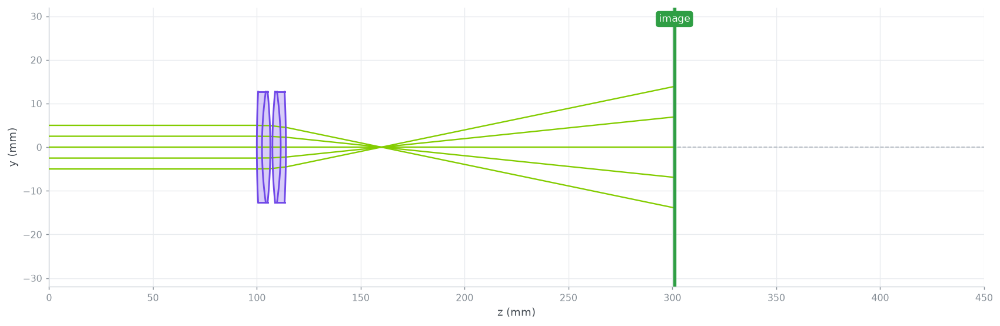
In [28]: pair.split_plossl(0)
In [29]: [lens.plossl_group for lens in pair.lenses]
Out[29]: [None, None]Fields (beams)
set_field changes only what you pass. add_field copies the selected field, applies your
changes and selects the new one.
In [30]: bench = Bench(empty=True)
In [31]: bench.add_lens("AC254-100-A");
In [32]: bench.set_field(0, diameter_mm=8, wavelength_nm=488)
Out[32]: FieldInfo(index=0, diameter_mm=8.0, angle_deg=0.0, vergence_dioptres=0.0, offset_mm=0.0, wavelength_nm=488.0, colour='#00c4cc', colour_follows_wavelength=True, selected=True)
In [33]: bench.add_field(angle_deg=2, colour="#d62728");
In [34]: bench.add_field(angle_deg=-3, vergence_dioptres=0, offset_mm=1, colour="wavelength");
In [35]: [(f.index, f.angle_deg, f.offset_mm, f.colour, f.selected) for f in bench.fields]
Out[35]:
[(0, 0.0, 0.0, '#00c4cc', False),
(1, 2.0, 0.0, '#d62728', False),
(2, -3.0, 1.0, '#00c4cc', True)]
In [36]: bench.remove_fields([2])
In [37]: bench.select_field(0)
In [38]: bench.selected_field_index
Out[38]: 0Focus and summary
autofocus moves the image plane to the smallest RMS spot of the selected field and returns its z.
In [39]: bench.autofocus()
Out[39]: 203.6093088296824
In [40]: bench.summary()
Out[40]: DesignSummary(effective_focal_length_mm=100.0237167175361, back_focal_length_mm=97.12566624756624, f_number=12.502964589692013, transmitted_beam_diameter_mm=8.0, beam_is_clipped=False, image_z_mm=203.6093088296824, rms_spot_radius_um=[0.16311579432574855, 5.152642989320816], airy_radius_um=[7.442710081098185, 7.429725958674667])
In [41]: bench.set_image_z(bench.image_z_mm + 0.5)
In [42]: bench.summary().rms_spot_radius_um
Out[42]: [15.223267806171412, 20.165255784099255]
In [43]: bench.autofocus();Plots
plot(kind) draws any of six figures. The ray and spot diagrams show every field. The others show the
selected field, or the one given by field_index.
In [44]: bench.plot("ray_diagram")
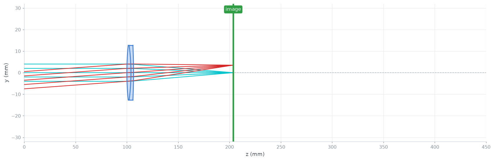
In [45]: bench.plot("spot_diagram")
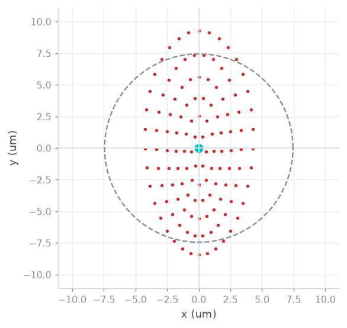
In [46]: bench.plot("through_focus")
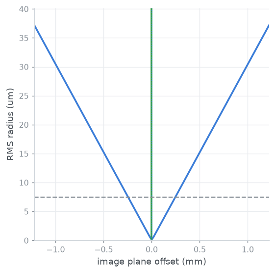
In [47]: bench.plot("mtf")
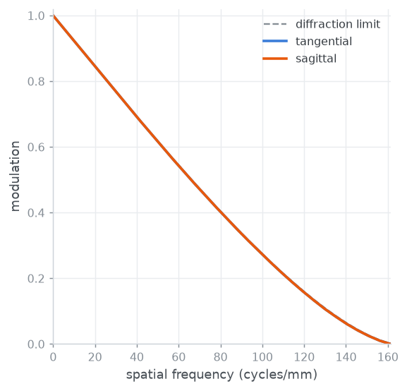
In [48]: bench.plot("ray_fan", field_index=1)
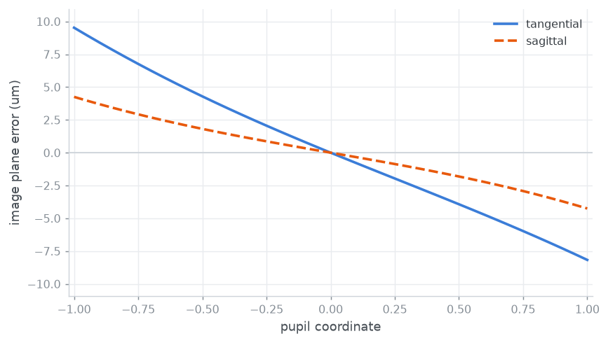
In [49]: bench.plot("field_curvature")
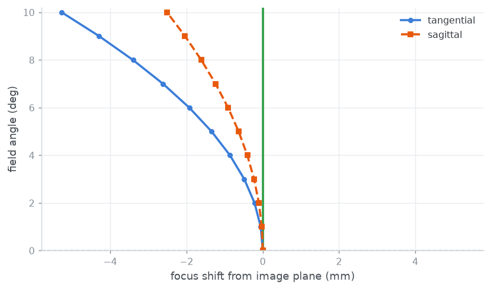
Raw results as NumPy arrays
Each analysis also returns its numbers. Lengths here are in mm unless the name says otherwise.
In [50]: spot = bench.spots()[0]
In [51]: spot.x.shape, spot.rms_radius * 1000 # rays; RMS radius in µm
Out[51]: ((127,), 0.16311579200551418)
In [52]: tf = bench.through_focus()
In [53]: tf.offsets.shape, tf.best_offset, tf.airy_radius
Out[53]: ((161,), 0.00026692222244606434, 0.007442710081098185)
In [54]: mtf = bench.mtf()
In [55]: import numpy as np
In [56]: for f in (10, 25, 50): # cycles/mm
...: t = np.interp(f, mtf.frequency, mtf.tangential)
...: s = np.interp(f, mtf.frequency, mtf.sagittal)
...: print(f"{f:3} cyc/mm T = {t:.3f} S = {s:.3f}")
10 cyc/mm T = 0.923 S = 0.923
25 cyc/mm T = 0.807 S = 0.807
50 cyc/mm T = 0.617 S = 0.617
In [57]: fan = bench.ray_fan(field_index=1)
In [58]: fan.pupil.shape, np.nanmax(np.abs(fan.tangential_error))
Out[58]: ((41,), np.float64(0.009526666907644366))
In [59]: curvature = bench.field_curvature()
In [60]: curvature.angles
Out[60]: array([ 0., 1., 2., 3., 4., 5., 6., 7., 8., 9., 10.])
In [61]: curvature.tangential_shift.round(2)
Out[61]:
array([ 0. , -0.05, -0.21, -0.48, -0.86, -1.34, -1.93, -2.61, -3.4 ,
-4.29, -5.27])Plot them however you like:
In [62]: from matplotlib.figure import Figure
In [63]: fig = Figure(figsize=(7, 3.5))
...: ax = fig.subplots()
...: for i, name in enumerate(["on axis", "2 deg"]):
...: result = bench.through_focus(field_index=i)
...: ax.plot(result.offsets, result.rms_current * 1000, label=name)
...: ax.set(xlabel="image plane offset (mm)", ylabel="RMS spot radius (µm)")
...: ax.legend()
...: fig
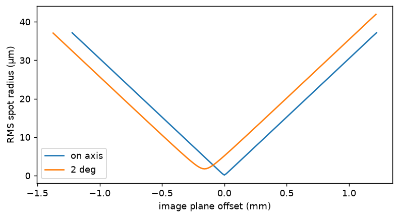
bench.state() returns a copy of the complete design, every surface included, for use with
raycrafter.core.analysis. Changing the copy does not change the bench.
Sweeps
Scripting pays off when you compare many configurations. Which way round should a plano-convex lens go?
In [64]: for part in ("LA1509-A", "AC254-100-A"):
...: test = Bench(empty=True)
...: test.add_lens(part)
...: for _ in range(2):
...: test.autofocus()
...: s = test.summary()
...: print(f"{part:12} flipped={test.lenses[0].flipped!s:5} "
...: f"RMS = {s.rms_spot_radius_um[0]:7.2f} µm Airy = {s.airy_radius_um[0]:.2f} µm")
...: test.flip_lens(0)
LA1509-A flipped=False RMS = 2.75 µm Airy = 6.71 µm
LA1509-A flipped=True RMS = 10.93 µm Airy = 6.68 µm
AC254-100-A flipped=False RMS = 0.42 µm Airy = 6.77 µm
AC254-100-A flipped=True RMS = 6.38 µm Airy = 6.75 µmHow does spot size grow with beam diameter?
In [65]: diameters = np.arange(2, 21, 2)
In [66]: curves = {}
...: for part in ("LA1509-A", "AC254-100-A"):
...: test = Bench(empty=True)
...: test.add_lens(part)
...: rms = []
...: for d in diameters:
...: test.set_field(0, diameter_mm=d)
...: test.autofocus()
...: rms.append(test.summary().rms_spot_radius_um[0])
...: curves[part] = rms
In [67]: fig = Figure(figsize=(7, 3.5))
...: ax = fig.subplots()
...: for label, rms in curves.items():
...: ax.semilogy(diameters, rms, "o-", label=label)
...: ax.set(xlabel="beam diameter (mm)", ylabel="RMS spot radius at best focus (µm)")
...: ax.legend()
...: fig
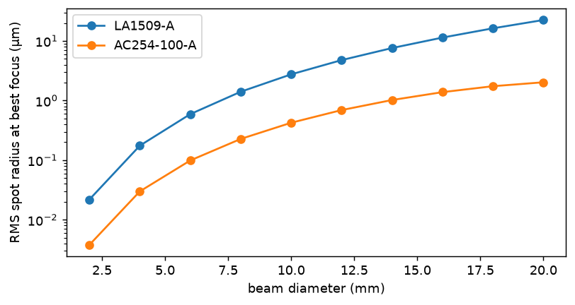
Drive the open window
Start RayCrafter (raycrafter in another terminal), then use Bench.connect(). The methods are
the same, but each edit happens in the window and it redraws. The script also sees changes you make by hand. The link
only listens on your own computer. It is off if RayCrafter was started with --no-agent-link.
In [68]: live = Bench.connect()
In [69]: live
Out[69]: <Bench (connected to the RayCrafter window): 1 lens, 1 field, image at 307.2 mm>
In [70]: live.is_connected
Out[70]: True
In [71]: live.new_design(discard_unsaved=True)
In [72]: live.add_lens("AC254-100-A");
...: live.add_lens("AC254-050-A", front_z_mm=180);
...: live.add_field(angle_deg=1.5, colour="#d62728");
...: live.select_field(0)
...: live.autofocus()
Out[72]: 200.7462815393905
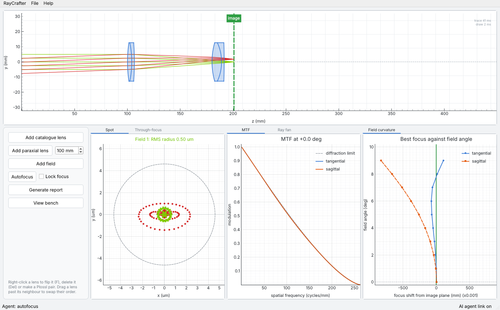
Move a lens from the script and the window follows:
In [73]: live.move_lens(1, front_z_mm=140);
In [74]: live.autofocus()
Out[74]: 172.7394434001334
Which index is which?
The Bench list in the window shows every lens and field with the index the API uses. Selecting a row highlights it in the side view. Here lens 1 is selected.
In [75]: [(lens.index, lens.part_number) for lens in live.lenses]
Out[75]: [(0, 'AC254-100-A'), (1, 'AC254-050-A')]
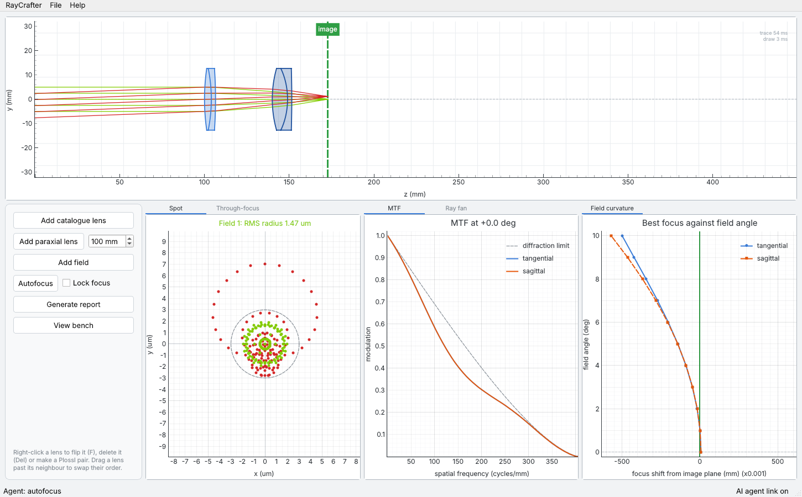

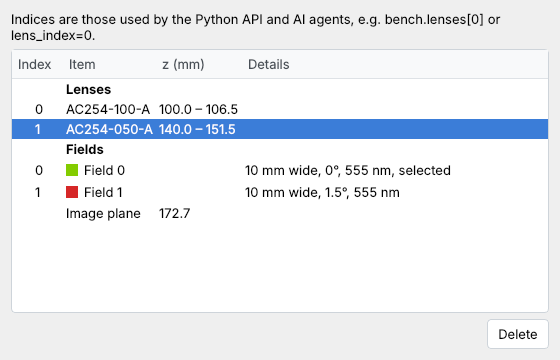
Files and reports
Save and load Zemax .zmx files, and write the HTML report. load_zmx returns a list of notes on
anything RayCrafter simplified. See how lenses differ from Zemax.
In [76]: bench.has_unsaved_changes
Out[76]: True
In [77]: bench.save_zmx("reducer.zmx")
Out[77]: PosixPath('/tmp/raycrafter-demo/reducer.zmx')
In [78]: bench.has_unsaved_changes
Out[78]: False
In [79]: reloaded = Bench.from_zmx("reducer.zmx")
In [80]: [lens.part_number for lens in reloaded.lenses]
Out[80]: ['AC254-100-A']
In [81]: reloaded.load_zmx("reducer.zmx", discard_unsaved=True)
Out[81]: []
In [82]: bench.write_report("design.html") # add open_in_browser=True to view it
Out[82]: PosixPath('/tmp/raycrafter-demo/design.html')Errors
A request that makes no sense raises ValueError with an explanation. Bench.connect() raises
ConnectionError if no window answers.
In [83]: bench.add_lens("AC999-000-Z") # raises
ValueError: Unknown part number 'AC999-000-Z'; use search_lenses to find one
In [84]: bench.flip_lens(7) # raises
ValueError: There is no lens 7; the bench has 1 lens(es)
In [85]: bench.add_lens("LA1509-A");
In [86]: bench.new_design() # raises
ValueError: The design has unsaved changes. Call save_zmx first, or pass discard_unsaved=true to throw them away.Reference
The full docstrings are in
raycrafter/api.py,
or type bench.add_lens? in IPython. Arguments in [brackets] are optional.
| Create | |
|---|---|
Bench([empty]) | Headless bench |
Bench.connect([endpoint_path]) | Drive the open window |
Bench.from_zmx(file_path) | Headless bench from a file |
| Read | |
catalog, search_lenses([query, min_focal_length_mm, max_focal_length_mm, min_diameter_mm, category]) | Catalogue entries |
lenses, fields | Lists of LensInfo, FieldInfo |
image_z_mm, selected_field_index | Image plane, selected field |
is_connected, has_unsaved_changes | Booleans |
state() | Copy of the whole design |
| Lenses | |
add_lens(part_number, [front_z_mm]) | Add a catalogue lens |
add_paraxial_lens(focal_length_mm, [front_z_mm]) | Add an ideal thin lens |
move_lens(lens_index, front_z_mm) | Move, as by dragging |
flip_lens(lens_index), delete_lens(lens_index) | Turn round, remove |
make_plossl(lens_index), split_plossl(lens_index) | Pair, unpair |
| Fields and image plane | |
set_field(field_index, [diameter_mm, angle_deg, vergence_dioptres, offset_mm, wavelength_nm, colour]) | Change a field |
add_field([...]) | Copy the selected field, with changes |
remove_fields(field_indices), select_field(field_index) | Remove, select |
set_image_z(image_z_mm), autofocus() | Place the image plane |
| Analyses | |
summary() | DesignSummary |
spots() | One spot result per field |
through_focus([field_index]), mtf([field_index]), ray_fan([field_index]), field_curvature([field_index]) | Result arrays |
plot(kind, [field_index]) | matplotlib Figure |
| Files | |
new_design([discard_unsaved]) | Start again |
load_zmx(file_path, [discard_unsaved]), save_zmx(file_path) | Zemax files |
write_report(file_path, [open_in_browser]) | HTML report |